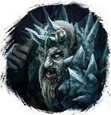
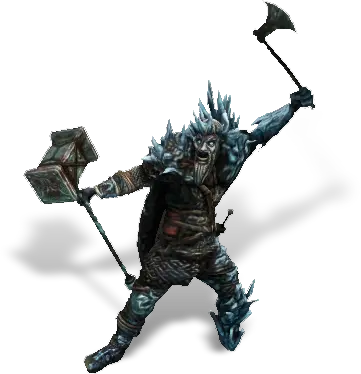
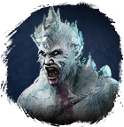
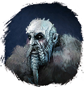
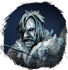
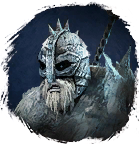
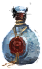

Открыть в интерактивной вики →

| Уровень | лёгк. 115 / норм. 135 / тяжел. 165 |
|---|---|
| Зоны атаки | ближняя, дальняя, ментальная |
| Шанс дропа 100% — уровни | лёгк. 1-100 / норм. 1-100 / тяжел. 1-140 |
| Шанс дропа 90% — уровни | лёгк. 101-140 / норм. 101-140 / тяжел. -- |
| Шанс дропа 70% — уровни | -- |
| Группа боссов | Тревога |
| Сила (PvE) | лёгк. 5703 / норм. 9401 / тяжел. 13 518 |
| Аспект арены | Farao |
| Здоровье | лёгк. 18 000 / норм. 64 000 / тяжел. 116 000 |
| Мана | 15 000 |
| Выносливость | 25 000 |
Команда
{'e': ['

Викинг-лучник', '
Викинг-маг'], 'n': ['Викинг-лучник', '
Викинг-рыцарь', 'Викинг-маг', '
Викинг-шид'], 'h': ['Викинг-лучник', 'Викинг-рыцарь', 'Викинг-маг', 'Викинг-шид']}  |   | ||||
Навыки


Дроп


Требования для входа
лёгк.:
норм.: Бутылка Выпивки ×5
тяжел.: Путь тревоги Бутылка Выпивки ×5
Путь тревоги Бутылка Выпивки ×5

Бутылка Выпивки ×2норм.: Бутылка Выпивки ×5
тяжел.:
Путь тревоги Бутылка Выпивки ×5Путь по картам
Статистика
 |  |  | |||
| Уровень: 115 | Уровень: 135 | Уровень: 165 | |||
Здоровье: 29 000 Мана: 15 000 Выносливость: 25 000 | Здоровье: 64 000 Мана: 15 000 Выносливость: 25 000 | Здоровье: 116 000 Мана: 15 000 Выносливость: 25 000 |
Умения
| Критический Удар Фронтальный Удар Таран | Бросок | Боевой Клич Толстокожесть Ярость Паника |
Локация
Пещера подо льдом
Иммунитеты / особые умения
-